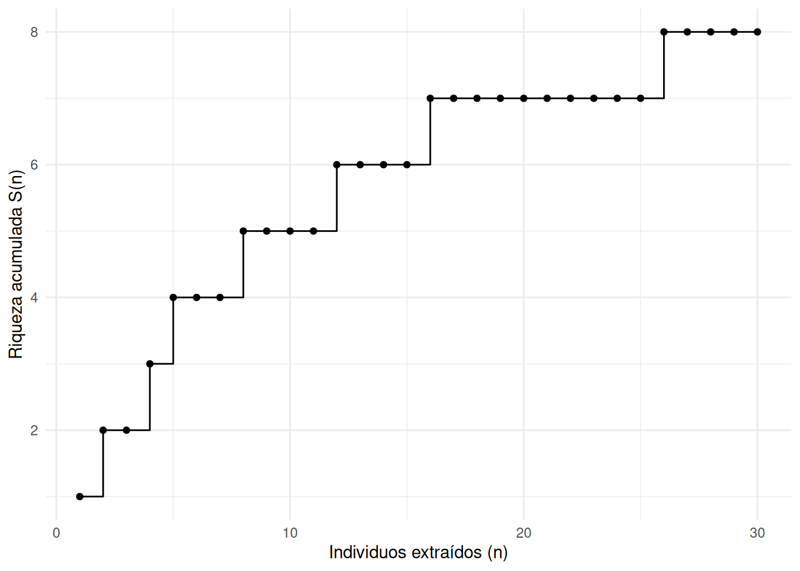
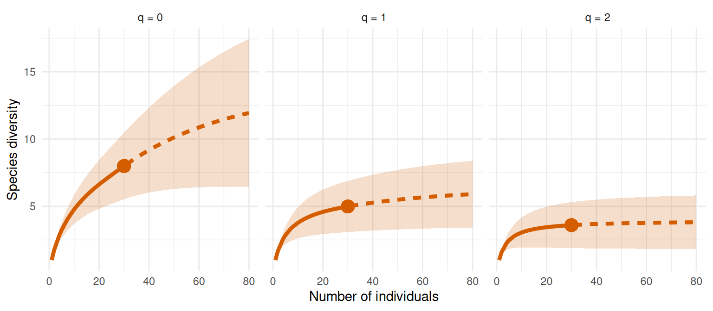
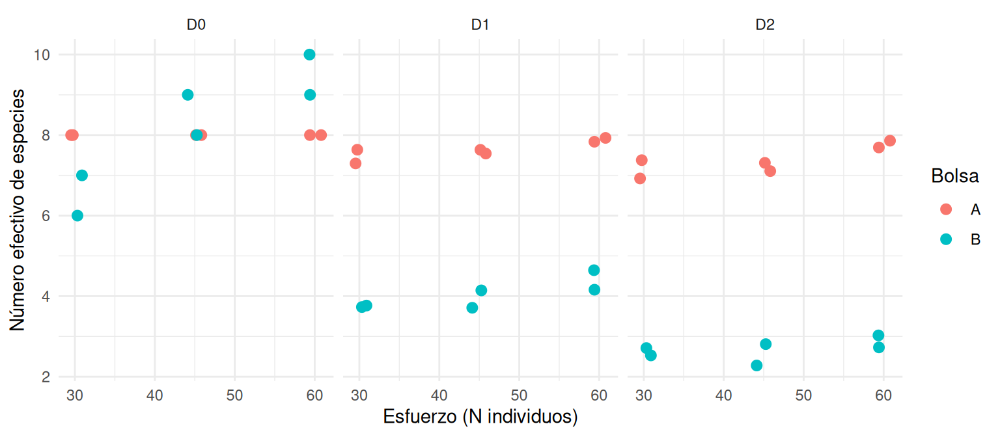
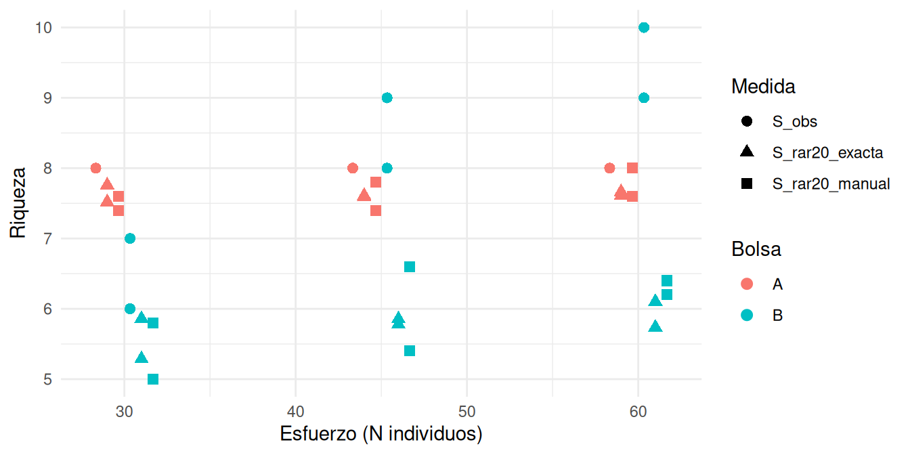
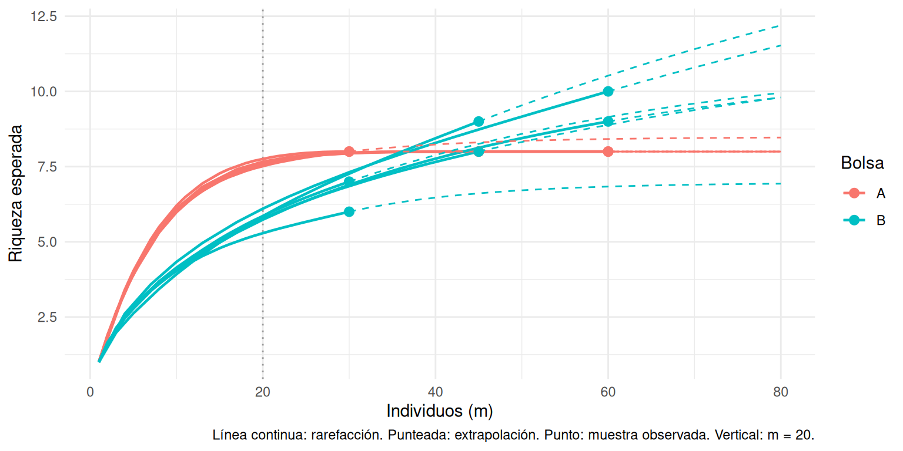

library(dplyr) # manipular tablas
library(ggplot2) # gráficos
library(iNEXT) # rarefacción / extrapolación (Chao et al.)
# La Parte 2 usa además tidyr. Si falta alguno:
# install.packages(c("dplyr", "ggplot2", "tidyr", "iNEXT"))Lab 09: Análisis de diversidad en R
Curvas de acumulación, números de Hill y rarefacción
Este archivo es material de referencia: no se usa durante la sesión de laboratorio. Contiene el código para reproducir todo lo que hicieron a mano y las figuras de la síntesis. La Parte 1 analiza la muestra de un grupo a partir de su secuencia de letras (Tabla 1 de la hoja de registro). La Parte 2 combina los conteos de todos los grupos de la clase.
Descarguen el archivo .qmd (botón </> Code arriba a la derecha en la versión web) y ábranlo en RStudio.
Parte 1. Su muestra
1.1 Su secuencia de extracción
Escriban las letras de su Tabla 1 en el orden en que salieron, una por ficha. El ejemplo tiene 30 fichas; reemplácenlo por su secuencia.
secuencia <- c("A", "C", "A", "B", "D", "A", "C", "E", "A", "A",
"B", "F", "A", "A", "C", "G", "A", "B", "A", "D",
"A", "A", "C", "B", "A", "H", "A", "D", "A", "B")
length(secuencia) # debe ser igual a su esfuerzo asignado (N)[1] 301.2 De la secuencia a una tabla de abundancias
La función recibe el vector de letras y devuelve una tabla con una fila por especie: el conteo \(n_i\) y la abundancia relativa \(p_i = n_i / N\).
tabla_abundancias <- function(secuencia) {
conteo <- table(secuencia) # cuántas fichas de cada letra
data.frame(
especie = names(conteo),
n = as.integer(conteo), # n_i
p = as.integer(conteo) / length(secuencia) # p_i = n_i / N
)
}
tabla <- tabla_abundancias(secuencia)
tabla especie n p
1 A 14 0.46666667
2 B 5 0.16666667
3 C 4 0.13333333
4 D 3 0.10000000
5 E 1 0.03333333
6 F 1 0.03333333
7 G 1 0.03333333
8 H 1 0.03333333Comparen con su Tabla 2: la columna n debe coincidir con \(n_i\) y p con \(p_i\).
1.3 Índices y números de Hill
La función recibe la tabla de abundancias y calcula riqueza, Shannon, Simpson y los números efectivos de especies de orden 0, 1 y 2.
numeros_hill <- function(tabla) {
p <- tabla$p
S <- nrow(tabla) # riqueza observada: número de especies
H <- -sum(p * log(p)) # entropía de Shannon
lambda <- sum(p^2) # concentración de Simpson
data.frame(
N = sum(tabla$n),
S_obs = S,
H = H,
lambda = lambda,
D0 = S, # Hill q = 0: riqueza
D1 = exp(H), # Hill q = 1: exp(Shannon)
D2 = 1 / lambda, # Hill q = 2: inverso de Simpson
singletons = sum(tabla$n == 1) # especies con un solo individuo
)
}
numeros_hill(tabla) N S_obs H lambda D0 D1 D2 singletons
1 30 8 1.606697 0.2777778 8 4.986315 3.6 4Comparen estos valores con el resumen de la hoja de registro. Recuerden que siempre D0 >= D1 >= D2: cuanto mayor la brecha, más desigual la distribución de abundancias.
1.4 Curva de acumulación
Riqueza acumulada después de cada individuo, en el orden de extracción. !duplicated(secuencia) es TRUE la primera vez que aparece cada letra; cumsum() va sumando esas primeras apariciones.
curva_acumulacion <- function(secuencia) {
data.frame(
n = seq_along(secuencia), # 1, 2, ..., N
S = cumsum(!duplicated(secuencia)) # riqueza acumulada S(n)
)
}
acum <- curva_acumulacion(secuencia)
ggplot(acum, aes(x = n, y = S)) +
geom_step() +
geom_point() +
labs(x = "Individuos extraídos (n)", y = "Riqueza acumulada S(n)") +
theme_minimal()
1.5 Rarefacción a m = 20: tres maneras
(a) Lo mismo que hicieron con las fichas, 1000 veces. sample(secuencia, 20) toma 20 fichas de su muestra sin reemplazo; unique() deja las especies distintas; length() las cuenta.
m <- 20
set.seed(1) # para que el resultado sea reproducible
riqueza_20 <- replicate(1000, length(unique(sample(secuencia, m))))
mean(riqueza_20) # comparar con la media de la Tabla 3[1] 6.615table(riqueza_20) # cuántas veces salió cada valor de riquezariqueza_20
4 5 6 7 8
9 92 325 423 151 (b) La fórmula exacta. La riqueza esperada en \(m\) individuos tomados de una muestra con \(N\) individuos es la suma, sobre las especies, de la probabilidad de que cada una aparezca al menos una vez (Hurlbert 1971; Gotelli & Colwell 2001):
\[E[S_m] = \sum_i \left[ 1 - \frac{\binom{N - n_i}{m}}{\binom{N}{m}} \right]\]
riqueza_rarefactada <- function(tabla, m) {
N <- sum(tabla$n)
sum(1 - choose(N - tabla$n, m) / choose(N, m))
}
riqueza_rarefactada(tabla, m = 20)[1] 6.627679(c) Con iNEXT. Da el mismo valor para \(q = 0\) y además calcula intervalos de confianza y los órdenes \(q = 1\) y \(q = 2\).
estimateD(tabla$n, q = c(0, 1, 2), datatype = "abundance",
base = "size", level = 20, nboot = 100) |>
select(Order.q, m, qD, qD.LCL, qD.UCL) Order.q m qD qD.LCL qD.UCL
1 0 20 6.627679 4.878231 8.377127
2 1 20 4.583156 3.194029 5.972283
3 2 20 3.445545 2.263178 4.6279111.6 Curvas de rarefacción y extrapolación
iNEXT construye la curva completa: la parte interpolada (rarefacción, hasta su \(N\)) y la extrapolada (línea punteada, más allá de su \(N\)). La extrapolación supone que la muestra captura bien la estructura de la comunidad; con pocas fichas y varios singletons, el intervalo es muy ancho.
resultado <- iNEXT(tabla$n, q = c(0, 1, 2), datatype = "abundance",
endpoint = 80, nboot = 100)
ggiNEXT(resultado, type = 1, facet.var = "Order.q") +
theme_minimal() +
theme(legend.position = "none")
Para comparar con la hoja de registro
Comparen: media de sus 5 repeticiones manuales (Tabla 3), media de 1000 repeticiones en R (a), valor exacto (b). ¿Qué tan lejos quedó su media manual? ¿Por qué?
Parte 2. La clase
La hoja compartida tiene una fila por grupo: grupo, bolsa, N, el conteo de cada letra (A … L) y los valores calculados a mano (Shannon, lambda, D1, D2, S_rar20_manual). Aquí se usa un archivo de ejemplo simulado; cambien el nombre por el del archivo exportado de la hoja.
clase <- read.csv("L09-clase-ejemplo.csv") |>
mutate(grupo = factor(grupo), bolsa = factor(bolsa))
clase |> select(grupo, bolsa, N, A:L) grupo bolsa N A B C D E F G H I J K L
1 1 A 30 5 2 5 3 5 4 5 1 0 0 0 0
2 2 A 30 5 5 4 2 4 2 4 4 0 0 0 0
3 3 A 45 6 5 6 5 3 7 9 4 0 0 0 0
4 4 A 45 5 4 7 5 3 10 6 5 0 0 0 0
5 5 A 60 8 5 9 6 9 8 9 6 0 0 0 0
6 6 A 60 7 9 8 7 7 7 9 6 0 0 0 0
7 7 B 30 18 4 2 3 0 1 0 1 1 0 0 0
8 8 B 30 17 4 4 1 3 1 0 0 0 0 0 0
9 9 B 45 25 8 3 4 2 1 0 1 1 0 0 0
10 10 B 45 29 5 3 3 1 0 1 1 0 1 1 0
11 11 B 60 34 11 4 4 2 2 1 0 0 1 1 0
12 12 B 60 32 10 6 4 3 1 1 0 1 1 1 02.1 De la fila de conteos a la tabla de abundancias
Pasamos los conteos a formato largo (una fila por grupo × especie) y quitamos las especies con conteo cero. Esto da, para cada grupo, la misma tabla que produce tabla_abundancias().
abund <- clase |>
select(grupo, bolsa, N, A:L) |>
tidyr::pivot_longer(A:L, names_to = "especie", values_to = "n") |>
filter(n > 0) |>
mutate(p = n / N)
head(abund)# A tibble: 6 × 6
grupo bolsa N especie n p
<fct> <fct> <int> <chr> <int> <dbl>
1 1 A 30 A 5 0.167
2 1 A 30 B 2 0.0667
3 1 A 30 C 5 0.167
4 1 A 30 D 3 0.1
5 1 A 30 E 5 0.167
6 1 A 30 F 4 0.133 2.2 Números de Hill de cada grupo frente al esfuerzo
Aplicamos numeros_hill() a la tabla de cada grupo y comparamos con lo que cada grupo calculó a mano.
hill_clase <- abund |>
group_by(grupo, bolsa) |>
reframe(numeros_hill(pick(especie, n, p)))
# Comparación con el cálculo manual
hill_clase |>
left_join(select(clase, grupo, D1_mano = D1, D2_mano = D2), by = "grupo") |>
mutate(across(c(D1, D2), \(x) round(x, 2))) |>
select(grupo, bolsa, N, S_obs, singletons, D1, D1_mano, D2, D2_mano) |>
arrange(bolsa, N)# A tibble: 12 × 9
grupo bolsa N S_obs singletons D1 D1_mano D2 D2_mano
<fct> <fct> <int> <int> <int> <dbl> <dbl> <dbl> <dbl>
1 1 A 30 8 1 7.3 7.3 6.92 6.92
2 2 A 30 8 0 7.64 7.64 7.38 7.38
3 3 A 45 8 0 7.63 7.63 7.31 7.31
4 4 A 45 8 0 7.54 7.54 7.11 7.11
5 5 A 60 8 0 7.84 7.84 7.69 7.69
6 6 A 60 8 0 7.93 7.93 7.86 7.86
7 7 B 30 7 3 3.77 3.77 2.53 2.53
8 8 B 30 6 2 3.73 3.73 2.71 2.71
9 9 B 45 8 3 4.14 4.14 2.81 2.81
10 10 B 45 9 5 3.71 3.71 2.28 2.28
11 11 B 60 9 3 4.16 4.16 2.73 2.73
12 12 B 60 10 5 4.64 4.64 3.03 3.03hill_clase |>
tidyr::pivot_longer(c(D0, D1, D2), names_to = "orden", values_to = "D") |>
ggplot(aes(x = N, y = D, colour = bolsa)) +
geom_point(size = 2.5, position = position_jitter(width = 1, height = 0, seed = 1)) +
facet_wrap(~ orden) +
labs(x = "Esfuerzo (N individuos)", y = "Número efectivo de especies",
colour = "Bolsa") +
theme_minimal()
¿Cuál orden de diversidad cambia más con el esfuerzo? ¿Cuál bolsa es “más diversa” según cada orden? ¿Qué tan distintos son los dos grupos que muestrearon la misma bolsa con el mismo esfuerzo?
2.3 Rarefacción a m = 20: manual frente a exacta
rar_clase <- abund |>
group_by(grupo, bolsa, N) |>
summarise(S_obs = n(),
S_rar20_exacta = riqueza_rarefactada(pick(n), 20),
.groups = "drop") |>
left_join(select(clase, grupo, S_rar20_manual), by = "grupo")
rar_clase |> mutate(S_rar20_exacta = round(S_rar20_exacta, 2))# A tibble: 12 × 6
grupo bolsa N S_obs S_rar20_exacta S_rar20_manual
<fct> <fct> <int> <int> <dbl> <dbl>
1 1 A 30 8 7.52 7.6
2 2 A 30 8 7.76 7.4
3 3 A 45 8 7.61 7.8
4 4 A 45 8 7.59 7.4
5 5 A 60 8 7.61 8
6 6 A 60 8 7.66 7.6
7 7 B 30 7 5.86 5.8
8 8 B 30 6 5.29 5
9 9 B 45 8 5.78 5.4
10 10 B 45 9 5.85 6.6
11 11 B 60 9 5.74 6.4
12 12 B 60 10 6.1 6.2rar_clase |>
tidyr::pivot_longer(c(S_obs, S_rar20_exacta, S_rar20_manual),
names_to = "medida", values_to = "S") |>
ggplot(aes(x = N, y = S, colour = bolsa, shape = medida)) +
geom_point(size = 2.5, position = position_dodge(width = 4)) +
labs(x = "Esfuerzo (N individuos)", y = "Riqueza",
colour = "Bolsa", shape = "Medida") +
theme_minimal()
¿Qué pasa con la diferencia entre bolsas al estandarizar a \(m = 20\)? ¿Coincide con lo que dice la riqueza observada a esfuerzos grandes?
2.4 Curvas de rarefacción y extrapolación de toda la clase
iNEXT acepta una lista de vectores de abundancia, uno por grupo. Extraemos la tabla de resultados para colorear por bolsa.
abund_lista <- split(abund$n, abund$grupo) # lista: grupo -> vector n_i
inext_clase <- iNEXT(abund_lista, q = 0, datatype = "abundance",
endpoint = 80, nboot = 50)
curvas <- inext_clase$iNextEst$size_based |>
rename(grupo = Assemblage) |>
mutate(grupo = factor(grupo, levels = levels(clase$grupo))) |>
left_join(distinct(clase, grupo, bolsa), by = "grupo")
ggplot(curvas, aes(x = m, y = qD, group = grupo, colour = bolsa)) +
geom_vline(xintercept = 20, colour = "grey60", linetype = "dotted") +
geom_line(data = \(d) filter(d, Method != "Extrapolation"), linewidth = 0.8) +
geom_line(data = \(d) filter(d, Method != "Rarefaction"), linetype = "dashed") +
geom_point(data = \(d) filter(d, Method == "Observed"), size = 2.5) +
labs(x = "Individuos (m)", y = "Riqueza esperada",
colour = "Bolsa",
caption = "Línea continua: rarefacción. Punteada: extrapolación. Punto: muestra observada. Vertical: m = 20.") +
theme_minimal()
2.5 Composición real de las bolsas
Para cerrar, los números de Hill de las comunidades completas (80 fichas).
bolsa_A <- data.frame(especie = LETTERS[1:8], n = rep(10, 8))
bolsa_B <- data.frame(especie = LETTERS[1:11], n = c(44, 14, 8, 4, 3, 2, 1, 1, 1, 1, 1))
bind_rows(A = numeros_hill(mutate(bolsa_A, p = n / sum(n))),
B = numeros_hill(mutate(bolsa_B, p = n / sum(n))),
.id = "bolsa") |>
mutate(across(c(H, lambda, D1, D2), \(x) round(x, 2))) bolsa N S_obs H lambda D0 D1 D2 singletons
1 A 80 8 2.08 0.12 8 8.0 8.00 0
2 B 80 11 1.50 0.35 11 4.5 2.87 5